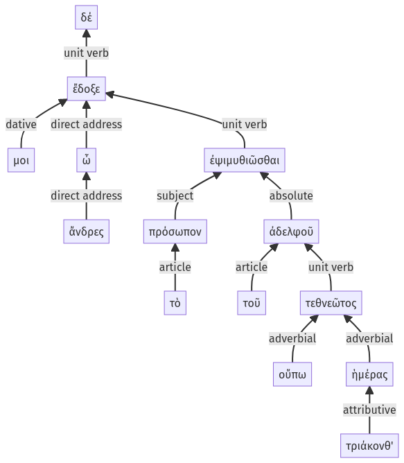

Lysias, Oration 1, 1.14.40-1.14.53a
1.14.33-1.14.39a | 1.14.54-1.14.66a
Sentence 34
1.14.40-1.14.53a
ἔδοξε δέ μοι, ὦ ἄνδρες, τὸ πρόσωπον ἐψιμυθιῶσθαι, τοῦ ἀδελφοῦ τεθνεῶτος οὔπω τριάκονθ' ἡμέρας:
1 ἔδοξε δέ μοι ὦ ἄνδρες
2 τὸ πρόσωπον ἐψιμυθιῶσθαι
3 τοῦ ἀδελφοῦ τεθνεῶτος οὔπω τριάκονθ' ἡμέρας
ἔδοξε δέ μοι, ὦ ἄνδρες, τὸ πρόσωπον ἐψιμυθιῶσθαι, τοῦ ἀδελφοῦ τεθνεῶτος οὔπω τριάκονθ' ἡμέρας:
Highlighting:
- connecting words
- unit verb
- subject
- object
Color code:
- independent clause (level 1, intransitive verb)
- infinitive in indirect statement (level 2, transitive verb)
- circumstantial participle (level 3, intransitive verb)
